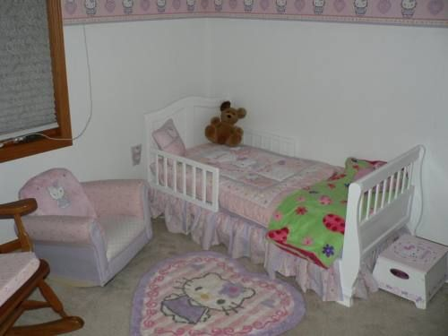

Música

Ao menos, era o que o relógio insistia em dizer.
Miska permanecia estendida sobre a cama, envolta em um pijama azul-escuro salpicado por constelações amarelas, como se carregasse um pedaço do céu noturno consigo. Nos braços, apertava seu inseparável urso de pelúcia, pequeno e igualmente azulado, companheiro fixo de todas as noites. Para ela, ele não era apenas um brinquedo, mas um verdadeiro “fiel escudeiro”, alguém que, na maioria das vezes, cumpria sua missão com excelência: ajudá-la a adormecer.
Naquela noite, porém, nada parecia funcionar.
Nem todas as noites obedecem aos nossos desejos mais simples, e o de Miska era apenas um: dormir em paz. O problema é que o sono se recusava a chegar. Algo invisível, difícil de nomear, se colocava entre ela e o descanso, roubando-lhe o conforto e o silêncio.
E isso a entristecia mais do que ela sabia explicar.
— Senhor Urso, eu não consigo dormir de novo. — murmurou, baixinho, direcionando-lhe o olhar por alguns segundos, sustentada pela esperança tipicamente infantil de que, dessa vez, ele pudesse responder. Como sempre, não respondeu. — … Me ajuda?
Miska apertou o ursinho com mais força, tentando arrancar dele alguma proteção extra. Seu semblante se tornou pesado, tingido por uma melancolia tímida, ressentida pela ausência de qualquer sinal de consolo.
— Se eu não dormir bem, vou me atrasar pra escola — continuou, sentindo o coração pequeno bater mais rápido. — E se eu me atrasar, o papai vai ficar muito bravo.. ele sempre fica.
O olhar caiu sobre o lençol. A mente frágil e ainda em formação começou a se perder em pensamentos confusos, cheios de insegurança e medo. Miska não queria imaginar o que poderia acontecer caso decepcionasse o pai; ela já sabia, por experiência, que nada de bom vinha depois disso.
Miska precisava dormir.
Miska estava com medo.
E, naquela noite específica, o Senhor Urso não bastava. O quarto parecia grande demais, silencioso demais, e a sensação de solidão se infiltrou em seu peito de maneira cruel. Incapaz de conter o peso daquilo, pequenas lágrimas escaparam de seus olhos, deslizando pelo rosto miúdo e marcando a pele com a tristeza que ela ainda não sabia nomear.
Ela permaneceu chorando em silêncio, encolhida em si mesma, por alguns minutos, talvez três, talvez mais; o tempo, naquele estado, parecia perder o sentido. Foi então que um ruído a fez estremecer. Um som baixo, respeitoso, ecoou pelo quarto: o ranger lento de uma porta sendo aberta com extremo cuidado.
Era Mazzi, sua mãe.
Ela costumava adentrar o quarto da filha de maneira discreta.
Aquilo já havia se tornado um ritual silencioso: verificar se Miska estava bem, se dormia tranquila, se os sonhos não a haviam abandonado naquela noite. Para Mazzi, a filha era a coisa mais bonita que já existira em toda a sua vida, talvez em toda a existência, e observá-la dormir, passar os dedos suavemente por seus cabelos enquanto o peito pequeno subia e descia em ritmo calmo, era uma das poucas coisas capazes de lhe trazer paz genuína.
Naquela noite, no entanto, algo estava fora do lugar.
Ao perceber que Miska não dormia, o espanto surgiu de imediato em seu olhar. Com passos cuidadosos e contidos, Mazzi entrou de vez no quarto e se aproximou da cama.
— Oh. Você ainda está acordada, meu bem? — perguntou, num tom baixo e solene, carregado de cuidado.
Quando se aproximou mais e finalmente viu o rosto da filha marcado por lágrimas recentes, sentiu o coração se desfazer no peito.
— Filha? Você tá chorando? O que aconteceu? — disse, agora com a preocupação transbordando não só na voz, mas em tudo o que ela era. Sentou-se com delicadeza ao lado de Miska, buscando entender, buscando proteger.
— E-eu não c-consigo dormir.. — murmurou a menina, engasgando-se entre soluços, as palavras saindo frágeis demais para se sustentarem sozinhas.
Mazzi inclinou levemente a cabeça, o rosto ainda tomado pela dor de ver a filha naquele estado, misturada a uma compaixão profunda que nasce do desejo de confortar, de acolher, de permanecer ali pelo tempo que fosse necessário.
— Ora, meu bem.. — disse Mazzi, deslizando os dedos com cuidado pelo rosto da filha e enxugando parte das lágrimas ainda quentes. — Isso não é um problema.
— É sim! — rebateu Miska de imediato, agora sem qualquer filtro para o medo que transbordava em sua voz pequena e trêmula. — O papai vai ficar muito bravo, eu não quero ver ele bravo. Eu tenho medo.
Ao ouvir aquilo, Mazzi continuou limpando o rosto da menina, mas sentiu cada palavra pesar como se fosse sua própria. O nó que se formou em seu peito era difícil de ignorar. Tudo o que ela queria, naquele instante, era envolver a filha em um abraço longo, forte o suficiente para proteger aquele coraçãozinho de qualquer coisa que pudesse feri-lo.
Ela respirou fundo, num suspiro leve, como quem organiza os próprios sentimentos antes de falar.
— Não precisa ter medo, tá bom, minha princesa? — disse, agora com um tom ainda mais doce, carregado de acolhimento. — Você nunca vai se atrasar pra escola. Eu sempre vou acordar bem cedinho pra te chamar, caso você não consiga levantar sozinha. Tudo bem? Como eu sempre fiz.
Enquanto Mazzi falava, Miska sentia o medo se afastar aos poucos, como se empurrado para fora de seu corpo, centímetro por centímetro. Havia algo na presença da mãe que tornava tudo mais leve, mais suportável. Mazzi sempre teve esse dom peculiar de acalmar o mundo ao redor da filha. E Miska, em toda a sua infância ainda em pleno florescer, acreditava sinceramente que aquilo era um superpoder, um segredo que só a sua mãe sabia usar.
— E mesmo que ele fique bravo, você não precisa temer nada, porque eu estou aqui. — afirmou Mazzi, acariciando de leve a bochecha de Miska. O gesto arrancou da menina um sorriso sincero, daqueles que iluminavam o quarto inteiro e que Mazzi amava mais do que qualquer outra coisa. — Eu nunca vou deixar que ele te machuque.
— .. Promete? Jura de dedinho? — perguntou Miska, com um brilho esperançoso nos olhos, erguendo o mindinho com toda a solenidade que aquele ritual infantil exigia.
Diante da cena, Mazzi não conseguiu conter um sorriso emocionado.
— Juro de dedinho. — respondeu, levantando o próprio mindinho e entrelaçando-o ao da filha. — Eu prometo. Enquanto eu respirar, vou fazer tudo o que estiver ao meu alcance pra te ver crescer, se fortalecer e amadurecer do jeito que você merece.
Quando a promessa se encerrou, mãe e filha trocaram sorrisos cúmplices, formando um quadro silencioso e delicado. Após alguns segundos, Mazzi pareceu ter uma ideia repentina.
— Ah! Já que falei em “crescer”, que tal uma história justamente sobre isso? — sugeriu, levantando-se da cama e caminhando até a prateleira repleta de livros infantis que havia escolhido a dedo ao longo dos anos para Miska.
Ao ouvir aquilo, a menina quase pulou de empolgação sobre o colchão.
— É hora da história?! — perguntou, agora com os olhos brilhando de animação.
— Isso mesmo, garotinha esperta! — respondeu Mazzi, virando-se rapidamente para lhe lançar uma piscadela divertida. Em seguida, voltou sua atenção à estante e retirou um volume específico.
Era um livro de capa azul, adornado por pequenos detalhes brancos que brilhavam no escuro, como estrelas espalhadas pela noite. Com ele em mãos, Mazzi retornou para a cama de Miska, pronta para dar início á sua ideia que poderia que tornar o mundo um pouco menos assustador.
— E pra minha princesa, essa é uma história que ensina não só sobre crescer, mas também sobre aprender a enxergar o mundo além do que os olhos alcançam. — disse Mazzi, cutucando de leve o peito de Miska duas vezes, bem na altura do coração. — É aqui dentro que as coisas mais importantes moram.
— Haha! Isso faz cócegas! — reclamou Miska entre risadinhas, afastando o dedo da mãe com as mãozinhas pequenas.
Mazzi soltou uma risada suave diante da reação, voltou o olhar para o livro e, antes de abri-lo, deixou escapar um suspiro tranquilo, acompanhado de um sorriso nostálgico.
— Com você, Le Petit Prince… — murmurou, num francês impecável.
Ela estava prestes a abrir o livro quando foi interrompida pela gargalhada de Miska, uma risada que Mazzi aprendera a amar desde o instante em que se tornara mãe. Doce, espontânea, cheia de vida: era a própria essência da filha.
— Do que você tá rindo, meu bem? — perguntou, genuinamente curiosa.
— Haha! É que.. haha! — Miska ria tanto que mal conseguia falar. — Miska ria tanto que mal conseguia organizar as palavras. — V-você falou de um jeito muito engraçado! Hahahaha!
Mazzi permaneceu em silêncio por alguns segundos, assimilando a reação, até que acabou rindo junto, completamente encantada com aquela inocência desarmada.
— Ora, minha pequena. — começou, ainda rindo de leve. — Isso é francês.
— Francês? — Miska repetiu, com os olhos arregalados, imediatamente interessada.
— Sim, meu bem. — confirmou Mazzi, assentindo. — É uma outra língua beeeem diferente da nossa, que veio de um país chamado França. Você sabia que o seu vovô é francês?
— Sério?! — Miska arregalou ainda mais os olhos. — Então o vovô também fala engraçado?!
— Hah, fala sim, minha querida. — respondeu Mazzi, fazendo um cafuné carinhoso nos cabelos da filha. — E a sua vovó, por outro lado, é italiana. Ou seja, ela veio da…?
— Da Itália! — respondeu Miska, erguendo os braços no ar, vibrando com a própria resposta.
— Iiiiissoooo! Olha só que garotinha esperta temos aqui! — respondeu Mazzi, com um tom levemente irônico e bem-humorado. Pelo sorriso satisfeito no rosto de Miska, dava para perceber que ela se sentia absolutamente convencida do próprio brilhantismo. — Seu avô viajou pra Itália por motivos pessoais, lá atrás, e foi justamente nessa viagem que ele conheceu a sua avó. Inclusive…
Antes de concluir a frase, Mazzi se levantou novamente da cama e saiu do quarto, deixando Miska sozinha por alguns instantes.
— Ué..? Pra onde a mamãe tá indo? — murmurou Miska para si mesma, arqueando a sobrancelha, claramente confusa.
Poucos minutos depois, Mazzi retornou, segurando uma fotografia em uma das mãos. Sentou-se outra vez na cama, agora um pouco mais próxima, acomodando-se à esquerda de Miska.
Sem dizer nada de imediato, ela mostrou a foto à filha. Miska, ainda intrigada, passou a observá-la com atenção redobrada.
Na imagem, um casal trocava um beijo leve e solene diante da Torre Eiffel.
A mulher trazia consigo traços marcantes do sul da Itália: cabelos escuros e volumosos, presos em um coque elegante, ainda que alguns fios escapassem de maneira proposital. Seus olhos amendoados eram intensos, expressivos, e a pele de tom oliva parecia manter um brilho próprio mesmo sob o céu acinzentado de Paris.
Ela vestia um vestido verde-esmeralda de corte impecável, acompanhado por um sobretudo de lã bem acinturado, no estilo wrap coat. Nos pés, botas de couro fino, de cano curto, completavam o visual com sofisticação discreta.
O homem, em contraste harmonioso, exibia um estilo tipicamente parisiense.
O rosto anguloso, o nariz proeminente e elegante, os olhos escuros e o cabelo igualmente escuro, perfeitamente alinhado, compunham sua aparência. Ele vestia um paletó de tweed cinza sobre uma camisa branca impecável, sem gravata, com os primeiros botões abertos. As calças de alfaiataria escuras e os sapatos de couro preto, capturados em pleno brilho pela fotografia, finalizavam o conjunto com natural elegância.
Entre os dois, uma jovem se destacava com facilidade. Era Mazzi. Em seu rosto, um sorriso largo e inabalável, que parece resistir a qualquer intempérie do mundo.
Ao observar a reação da filha, Mazzi percebeu algo que havia praticamente uma constelação inteira refletida nos olhos de Miska. O encantamento era evidente. A fotografia, mais do que uma imagem, havia se tornado uma pequena janela para um universo que acabava de se abrir diante dela.
— Uaaaaauu.. esses dois são a vovó e o vovô? — perguntou Miska, o sorriso aberto denunciando a animação quase impossível de conter.
— São sim, meu amor. Eles se chamam Serena Lorenzo e Olivier Ferland. — respondeu Mazzi, com um tom tranquilo e orgulhoso.
— E essa aqui é você, mamãe? — Miska continuou, apontando para a jovem no centro da fotografia.
Mazzi deixou escapar uma risada breve, levemente constrangida, como se aquele retrato guardasse memórias íntimas demais para serem expostas sem cuidado.
— Hah, sou eu sim. — confirmou. — Essa foi a minha primeira e única viagem pra França. Lembro que eles quiseram que eu passasse um tempo lá, não só pra conhecer o país, mas pra mergulhar de verdade na cultura, na história, no jeito de viver. Acabei aprendendo a língua deles bem rápido… e, com o tempo, consegui até o direito à cidadania italiana e francesa.
— Então a mamãe também é francesa?! — perguntou Miska, os olhos brilhando com a revelação.
— É.. de sangue, podemos dizer que sim. — respondeu Mazzi, escolhendo as palavras com cuidado. — Mas de nascimento? Eu sou tão americana quanto você.
— Eu também quero ser francesa! — exclamou Miska, aproximando-se ainda mais da mãe, tomada por um entusiasmo tipicamente infantil, que arrancou de Mazzi uma risada afetuosa.
— Ahhh, você quer, é? — provocou Mazzi, segurando e brincando com as mãozinhas inquietas da filha.
Miska assentiu com vigor.
— Quero! Quero falar engraçado igual a você, quero ir pra Paris que nem você foi! — disse, a cabeça pequena já transbordando de sonhos grandes demais pra caber ali.
Mazzi então uniu as próprias mãos às de Miska e a fitou com atenção, sustentando um sorriso sereno e solene.
— Eu prometo que vou te levar pra lá um dia. — afirmou Mazzi, com convicção serena.
— Promete mesmo?? — Miska perguntou, os olhos arregalados, querendo que aquela promessa fosse confirmada mais de uma vez para se tornar real.
— Prometo. — reforçou Mazzi, sem hesitar. — Talvez quando você crescer um pouquinho mais, eu te leve pra Paris. E você não vai se arrepender. É um lugar lindo, de verdade, quase tão belo quanto você. Vai conhecer coisas incríveis e, quem sabe, a gente não acaba com uma franco-americana na família?
As duas caíram na risada logo em seguida. Risadas leves, sinceras, cheias de calor, doces como mel, do tipo que fica ecoando no peito mesmo depois de acabar.
Quando o riso finalmente se dissipou, Mazzi desviou o olhar para o livro e arregalou levemente os olhos.
— Oh! — exclamou, pegando o livro quase de imediato. — A gente quase esqueceu da sua história! Vamos começar?
Miska respondeu com um sorriso animado, ajeitou-se melhor na cama, puxou a coberta até o queixo e abraçou com força o seu inseparável urso de pelúcia.
— Vamos!
Após a confirmação empolgada da filha, Mazzi abriu o livro, limpou a garganta e deu início à leitura de O Pequeno Príncipe do seu próprio jeito: leve, sereno e despretensioso. Não era uma narração técnica nem ensaiada, mas carregava algo mais valioso, cuidado. Miska acompanhava cada palavra com atenção fixa, encantada pelas mudanças sutis de voz que davam vida aos personagens, pela emoção delicada que Mazzi imprimia às cenas mais marcantes. O encontro no deserto, o pequeno planeta e sua rosa, as visitas a outros mundos, tudo ganhava forma e sentido nas mãos de quem sabia transformar palavras em aconchego.
Quando a história finalmente chegou ao fim, Mazzi fechou o livro com um suspiro longo, como quem acabara de concluir uma tarefa exaustiva. Talvez, de certo modo, tivesse sido mesmo. Interpretar nunca fora exatamente seu forte. Ainda assim, para ela, aquilo parecia apenas o básico. Para Miska, no entanto, era mais do que suficiente, era mágico.
Mazzi voltou o olhar para a filha e percebeu que ela já lutava contra o sono, a consciência pendendo perigosamente para o descanso. Aproximou-se um pouco mais e falou, em tom solene:
— Fim da história — disse, observando Miska se render aos poucos ao cansaço. — Bons sonhos. Je t’aime, mon amour…
Miska, ainda meio desperta, captou a palavra estrangeira e franziu levemente o cenho, curiosa.
— Hm.. o que foi que você disse, mamãe..?
Mazzi sorriu com ternura e, sem pressa, inclinou-se para depositar um beijo suave e cheio de carinho na bochecha da filha. Só então respondeu, em voz baixa:
— Eu disse que te amo, minha pequena princesa.
← Retornar